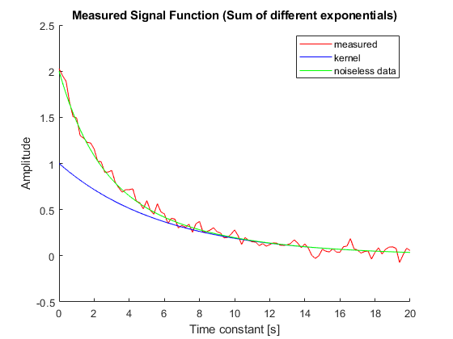
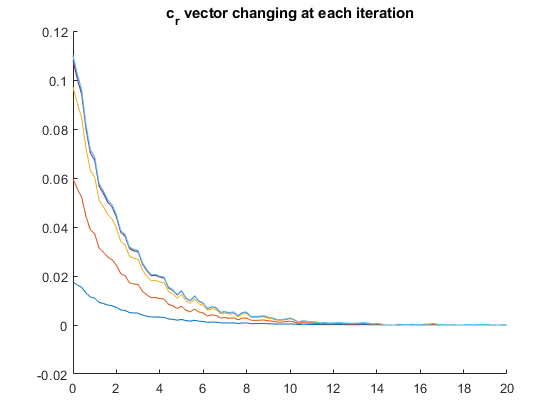
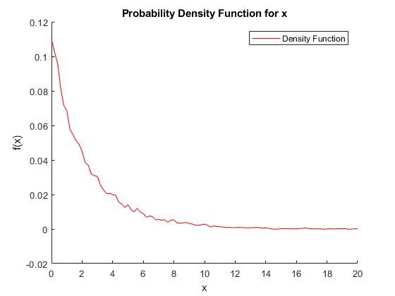
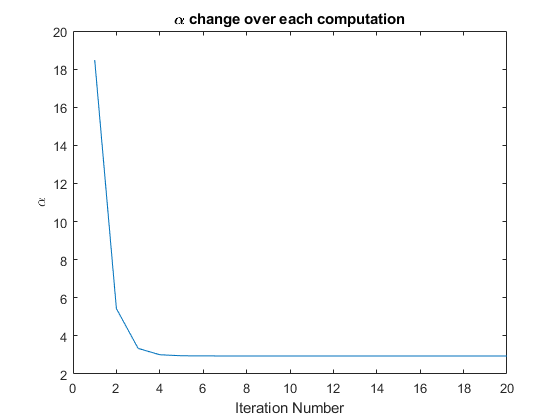

Contents
David Dobbie
Recreating paper 1 (Solving Fredholm Integrals of the first Kind With Tensor Product Structure in 2 and 2.5 Dimensions)
1053-587X(02)03282-8
%Aim: Extract the exponential time constants from a summation of several % type of them. clc clf clear time_const = 0.1 : 0.1 : 4; time_constants = [-6, -2]; exp_weightings = [-1, 3]; time = 0:0.2:20; init_individual_exp = []; for tc= time_constants init_individual_exp = [init_individual_exp; exp(time/tc)]; %%init_individual_exp = [init_individual_exp; normpdf(time, tc, 0.15) ]; end data= sum(init_individual_exp); %adds exponetial functions together K_1 = exp(time/(-6)); K_2 = ones(size(data')); %m = (K_1.*data)'; %for pdf of the it %K_0 = kron(K_1, K_2); K_0 = K_1; % generate the noise noise_mean = 0; noise_std_dev = 0.05; noise = normrnd(noise_mean, noise_std_dev, 1,length(time)); m = (noise + data)'; figure(1) hold on plot(time, m,'r'); plot (time,K_1,'b'); plot(time,data, 'g'); hold off legend("measured","kernel","noiseless data"); title('Measured Signal Function (Sum of different exponentials)') xlabel('Time constant [s]') ylabel('Amplitude')
Step 1 Compression
skipped at this point
Step 2 Optimisation
alpha = 100; c = ones(size(m)); alpha_hist = []; figure(2) clf hold on f = c; title('c_r vector changing at each iteration'); %this is the method that prevents it being divergent for i=1:20 %k_square = K_0*K_0'; stepFnMatrix = (heaviside(c.*K_0)).* eye(size(K_0'*K_0)); k_square = K_0 * stepFnMatrix * K_0'; %recreate eq 30 %made symmetric and semi-positive definite c = inv(k_square + alpha*eye(size(k_square)))*m; %eq 29 plot(time, (K_0.*c')') alpha = sqrt(size(c,2)) / norm(c); %implement eq 41 alpha_hist = [alpha_hist; alpha]; end hold off %{ %this is the divergent method for i=1:50 f = K_0'*c; c = (K_0 * f - m)/(-alpha); plot(time, c) alpha = length(c) / norm(c); alpha_hist = [alpha_hist; alpha]; end %} f = (K_0.*c')'; var = K_0'*((K_0*K_0' + alpha*eye(size(k_square)))^-2)*K_0; figure(3) clf hold on plot(time, f,'r') hold off legend("Density Function") title('Probability Density Function for x') ylabel('f(x)') xlabel('x') trapz(time,f) figure(4) plot(alpha_hist) title('\alpha change over each computation') xlabel('Iteration Number') ylabel('\alpha')
ans =
0.2505
  